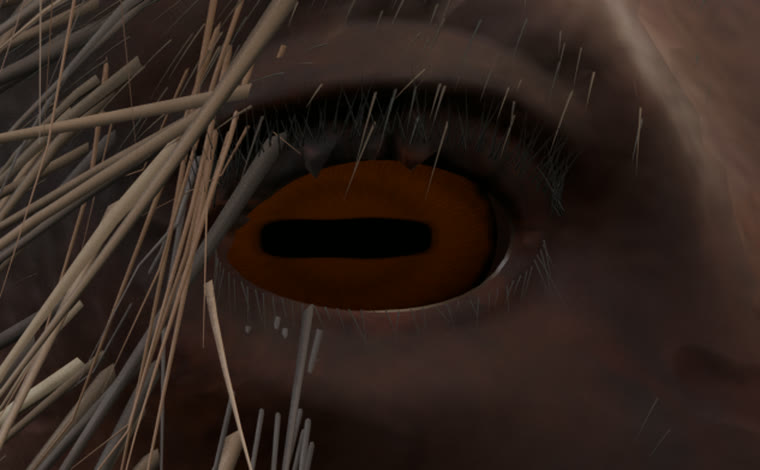
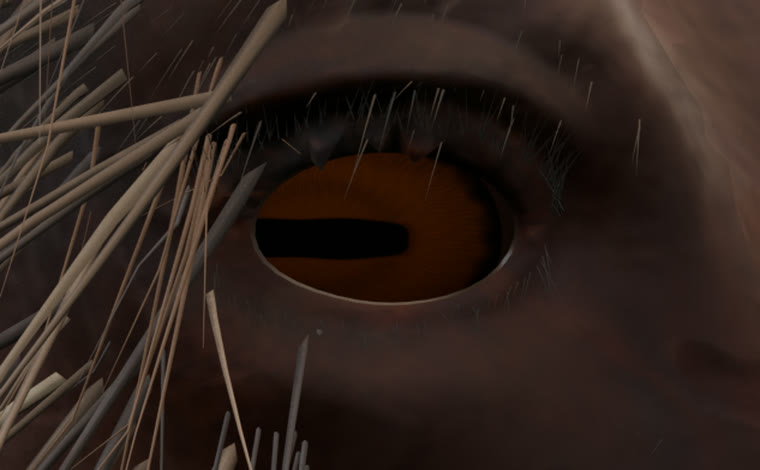
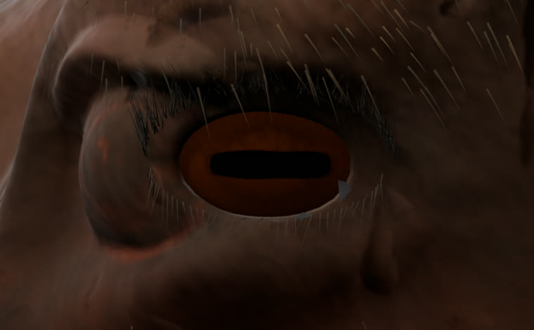
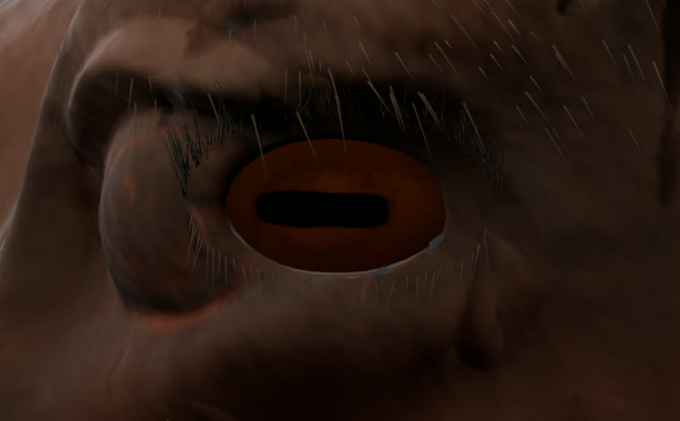

Оба глаза: прямо → влево
Это реальная отдельная анимация 3D-модели лося в Blender, а не нарисованная последовательность. Оба объёмных глаза начинают в нейтральном положении — зрачки по центру боковых глазниц, затем синхронно поворачиваются влево относительно головы, задерживают взгляд и возвращаются. Голова, кожа и веки остаются неподвижными.
ЛЕВЫЙ ГЛАЗПРАВЫЙ ГЛАЗ
Полный цикл: 2,5 секунды
Независимый игровой клип
EYES_LOOK_STRAIGHT_LEFT_LOOPАнимация Blender60 кадров при 24 FPS; превью — 30 реальных кадров при 12 FPS
Риг глазДва отдельных контроллера, поворот 0° → −18° → 0°, старые анимации сохранены
Контрольные кадры для каждого глаза
Сравните начальное положение зрачка и крайнее положение при взгляде влево. Это кадры одного и того же 3D-объекта, полученные рендером в Blender.



